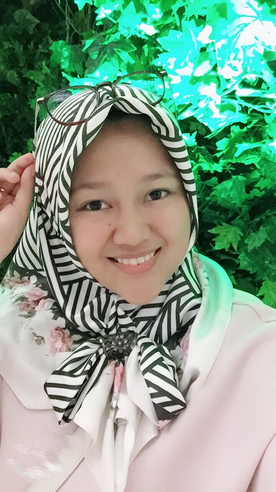

Autobiografi Hanifah Paswita

Nama saya Hanifah Paswita.Saya biasa dipanggil Ivah oleh keluarga dan
teman-teman.Saya lahir di Yogyakarta, 30 Oktober 1993.Saya anak ke 2
dari 3 bersaudara.Saya dan keluarga tinggal di Kota Ngawi, Jawa Timur.
Saya memulai pendidikan di SDN Jatigembol 6, lalu melanjutkan ke SMPN
1 Kedunggalar lulus tahun 2008 lalu saya masuk di SMAN 2 Ngawi,selama
SMA selain aktif dalam kegiatan akademik, saya juga aktif dikegiatan
ekstrakulikuler, sebagai pengurus OSIS. Selain itu di tahun 2009 saya
saya juga terpilih sebagai Duta Wisata (Dimas/Diajeng) Kabupaten Ngawi
sehingga banyak terlibat langsung dalam mempromosikan Pariwisata di kota
Ngawi.Tahun 2011 setelah lulus SMA saya memutuskan untuk langsung bekerja
saya pindah ke Jakarta dan bekerja di FIFGROUP salah satu anak
perusahaan astra yang bergerak dibidang pembiayaan. Setelah setahun bekerja,
di tahun 2012 saya melanjutkan pendidikan ke Universitas Indraprasta PGRI
Jakarta Jurusan Teknik Informatika.
Sebagai karyawan sekaligus dan mahasiswa saya harus bisa mengatur waktu
dengan baik, Alhamdulilah di tahun 2015 saya berhasil menjadi Juara 1
Katagori Kasir dalam Kontes Layanan Hebat yang diselenggarakan oleh
FIFGROUP skala nasional. Selain itu di tahun 2016 saya juga berhasil
menyelesaikan pendidikan menjadi Sarjana Komputer.
Memasuki awal tahun 2018, tepatnya di bulan januari saya memutuskan
berhenti bekerja, Saat ini saya sedang aktif mengikuti pembelajaran
Full Stack Javascript Immersive di Hacktiv8. Harapannya saya bisa
menjadi lebih baik dan berdampak positif bagi orang lain.